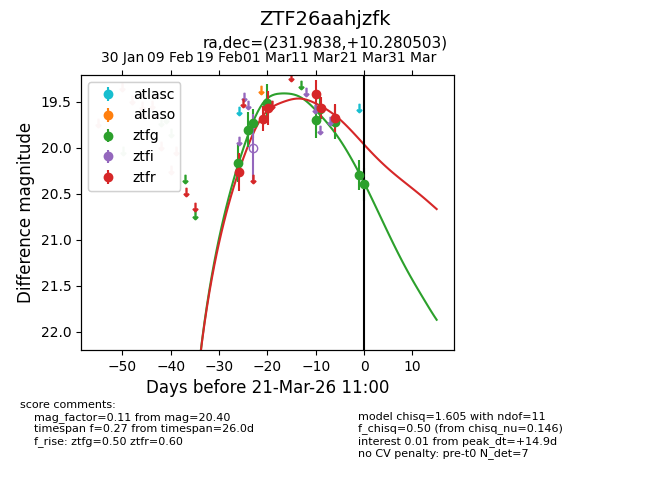
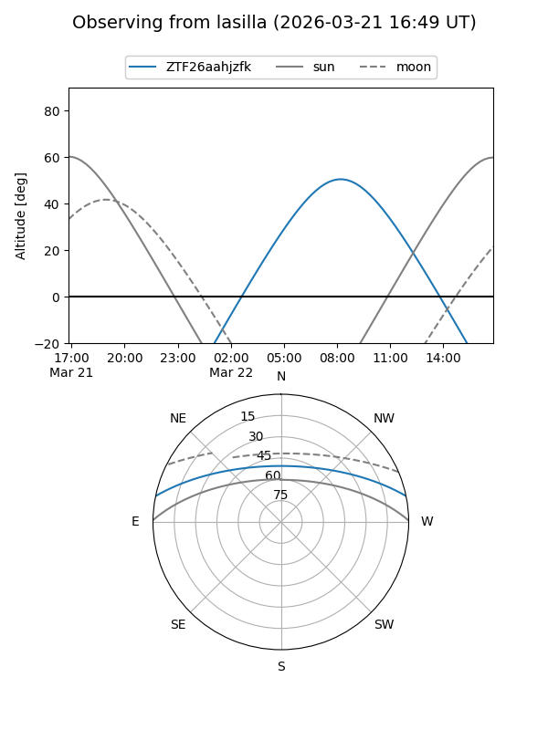
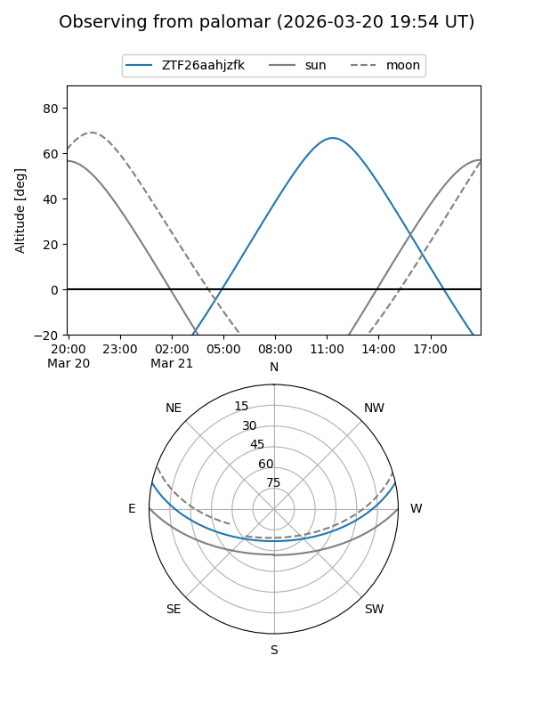
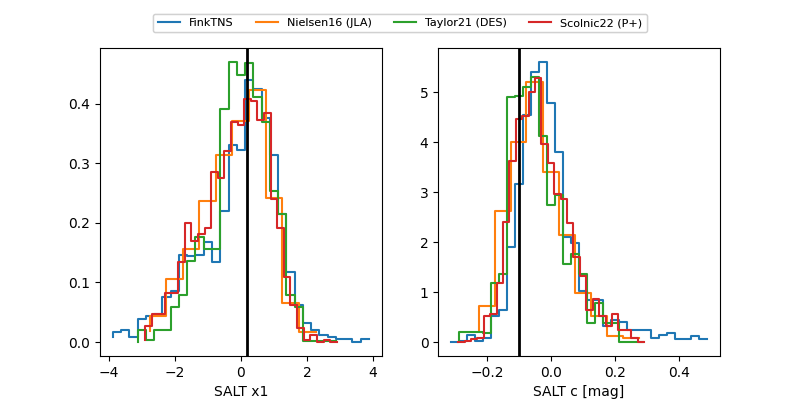

ZTF26aahjzfk
Target ZTF26aahjzfk at 2026-03-21 11:02
Aliases and brokers:
FINK: link
Lasair: link
ALeRCE: link
alt names
ZTF26aahjzfk (ztf,fink_ztf)
Coordinates:
equatorial (ra, dec) = 231.9838,+10.28050
equatorial (HMS+DMS) = 15:27:56.11,+10:16:49.81
galactic (l, b) = (15.9818,+49.52839)
Flags:
Photometry:
last ztfg=20.40, ztfr=19.68
9 ztfg, 6 ztfr detections
Lightcurve

Visibility


Additional plots
